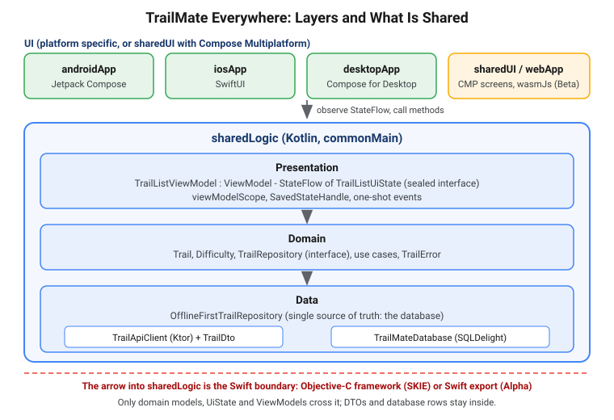

Architecture, Shared ViewModels and State
|
This content was generated with the assistance of AI and should be verified against the official documentation before being relied on in production. |
Sharing a Ktor client and a database is the easy half of Kotlin Multiplatform. The hard half is deciding
what the shared code looks like when a SwiftUI view, a Jetpack Compose screen and a desktop window all depend on
it. This page answers that: which layers to put in commonMain, how to make the repository offline-first, how to
model screen state, how the Jetpack ViewModel works in common code and reaches iOS, and what changes at the
Swift boundary where Kotlin types become Objective-C or Swift types.
The baseline is the one used across this section: Kotlin 2.4.20, Compose Multiplatform 1.12.1,
AGP 9.4, Ktor 3.6.0, SQLDelight 2.4.0, Koin 4.2.2, SKIE 0.10.15,
KMP-NativeCoroutines 1.0.6, Mokkery 3.5.0 and Turbine 1.2.1, with the Jetpack KMP libraries
lifecycle-viewmodel 2.11.0 and savedstate 1.5.0 (both Stable). Swift export and SwiftPM import are Alpha;
Wasm and the Compose Multiplatform web target are Beta. Every example is a slice of TrailMate Everywhere, the
multiplatform version of the Android section’s TrailMate app (package
com.example.trailmate). Native counterparts: Android app architecture,
ViewModel, lifecycle and coroutines,
Apple app architecture and
SwiftUI state and data flow. Flows and sealed classes are not
re-taught: see Flows and
Sealed classes and enums.
Which Layers to Share
The further down the stack, the cheaper sharing is, because lower layers do not touch UI frameworks.
-
Data —
TrailApiClient(Ktor) andTrailDto,TrailMateDatabase(SQLDelight),OfflineFirstTrailRepository. Share always: no platform types, and networking and storage have multiplatform libraries. -
Domain —
Trail,Difficulty, theTrailRepositoryinterface, use cases,TrailError. Share always: pure Kotlin, and where the business rules live. -
Presentation —
TrailListViewModelandTrailListUiState. Share when screen behavior must be identical on every platform; platform UI observes it. -
UI — Jetpack Compose, SwiftUI or Compose Multiplatform (
sharedUI). Native per platform, or shared; see Compose Multiplatform Fundamentals.

Arrows point downward and the domain layer knows nothing about DTOs or any UI framework. In KMP the domain and presentation types are also exactly what the iOS framework exposes, so whatever you put there becomes public Swift API.
Sharing ViewModels is optional: sharing only data and domain lets each platform keep an idiomatic presentation layer but writes the rules twice, while sharing presentation gives one state machine and one set of tests. TrailMate shares it, because a trail list that filters differently on two platforms is a bug, not a feature.
An Offline-First Repository
In an offline-first design the local database is the single source of truth. The UI never reads the network response directly: it observes the database, and the network only refreshes it. The app stays usable with no connection, and every screen sees the same data. The interface lives in the domain layer; the implementation in the data layer.
// sharedLogic/src/commonMain/kotlin/com/example/trailmate/domain/TrailRepository.kt
package com.example.trailmate.domain
import kotlinx.coroutines.flow.Flow
interface TrailRepository {
/** Cached trails; emits again whenever the database changes. */
val trails: Flow<List<Trail>>
/** Fetches from the network and writes the result to the database. */
suspend fun refresh(): Outcome<Unit>
}// sharedLogic/src/commonMain/kotlin/com/example/trailmate/data/OfflineFirstTrailRepository.kt
package com.example.trailmate.data
import app.cash.sqldelight.coroutines.asFlow
import app.cash.sqldelight.coroutines.mapToList
import com.example.trailmate.db.TrailMateDatabase
import com.example.trailmate.domain.Outcome
import com.example.trailmate.domain.Trail
import com.example.trailmate.domain.TrailRepository
import kotlinx.coroutines.CoroutineDispatcher
import kotlinx.coroutines.flow.Flow
import kotlinx.coroutines.flow.map
import kotlinx.coroutines.withContext
class OfflineFirstTrailRepository(
private val api: TrailApiClient,
private val database: TrailMateDatabase,
private val ioDispatcher: CoroutineDispatcher,
) : TrailRepository {
private val queries get() = database.trailQueries
override val trails: Flow<List<Trail>> =
queries.selectAll()
.asFlow()
.mapToList(ioDispatcher)
.map { rows -> rows.map { it.toDomain() } }
override suspend fun refresh(): Outcome<Unit> = withContext(ioDispatcher) {
runNetwork {
val remote = api.fetchTrails() // List<TrailDto>
database.transaction {
remote.forEach { queries.upsert(it.toEntity()) }
}
}
}
}The repository receives its dispatcher as a constructor parameter, so tests can inject a test dispatcher (see
Coroutines, Flow and Concurrency); trails is a
cold Flow that re-emits on every write; and refresh() returns an Outcome instead of throwing, as explained in
Modelling Errors Across Platforms.
See SQLDelight documentation and Kotlin docs — Create a multiplatform app using Ktor and SQLDelight. The client and the schema are detailed on Networking with the Ktor Client and Local Storage. Room 3 can replace SQLDelight behind the same interface; the repository’s contract does not change.
UI State as a Sealed Interface
A screen is a function of its state. Model all the states a screen can be in as one sealed hierarchy, so that invalid combinations (loading and error and content) are unrepresentable and every platform must handle every case.
// sharedLogic/src/commonMain/kotlin/com/example/trailmate/presentation/TrailListUiState.kt
package com.example.trailmate.presentation
import com.example.trailmate.domain.Trail
import com.example.trailmate.domain.TrailError
sealed interface TrailListUiState {
/** First load, nothing cached yet. */
data object Loading : TrailListUiState
/** Cached trails, possibly while a refresh is running. */
data class Content(
val trails: List<Trail>,
val query: String,
val isRefreshing: Boolean,
val refreshError: TrailError?,
) : TrailListUiState
/** Nothing cached and nothing matches. */
data class Empty(val query: String) : TrailListUiState
/** Nothing cached and the first refresh failed. */
data class Failed(val error: TrailError) : TrailListUiState
}A refresh failure with cached data is not Failed: it is a Content carrying a refreshError, so the list
stays on screen and the UI can show a snackbar. That is offline-first expressed in types.
Compose uses an exhaustive when over the sealed interface (strong skipping, the default since Kotlin 2.0.20, keeps
List<Trail> fields from forcing recomposition). SwiftUI, with an Objective-C framework, sees a class hierarchy
and no exhaustive switch; SKIE generates onEnum(of:) to restore it, and Swift export (Alpha) maps sealed
hierarchies to Swift enums since 2.4.20. See
Objective-C and Swift Interop.
// iosApp/iosApp/Trails/TrailListContent.swift (body of TrailListContent: View)
switch onEnum(of: state) { // generated by SKIE
case .loading: ProgressView()
case .empty(let empty): Text("No trails match \(empty.query)")
case .failed(let failed): ErrorView(error: failed.error)
case .content(let content): List(content.trails, id: \.id) { TrailRow(trail: $0) }
}The Jetpack ViewModel in Kotlin Multiplatform
Google ships the Jetpack ViewModel as a multiplatform library: androidx.lifecycle:lifecycle-viewmodel
(2.11.0, Stable) compiles for Android, iOS, desktop and web, and JetBrains publishes Compose Multiplatform ports
under org.jetbrains.androidx.lifecycle. You write the ViewModel once in commonMain; on Android it is the same
class that survives configuration changes, on the other platforms it lives as long as its owner keeps it.
// sharedLogic/build.gradle.kts
plugins {
alias(libs.plugins.kotlinMultiplatform)
alias(libs.plugins.androidKotlinMultiplatformLibrary) // com.android.kotlin.multiplatform.library
}
kotlin {
android {
namespace = "com.example.trailmate.shared"
compileSdk = 37
minSdk = 26
}
jvm()
listOf(iosArm64(), iosSimulatorArm64()).forEach { target ->
target.binaries.framework {
baseName = "SharedLogic"
isStatic = true
export(libs.androidx.lifecycle.viewmodel) // makes ViewModel visible to Swift
export(libs.androidx.lifecycle.viewmodel.savedstate)
}
}
sourceSets {
commonMain.dependencies {
api(libs.androidx.lifecycle.viewmodel) // api: part of our public surface
api(libs.androidx.lifecycle.viewmodel.savedstate) // SavedStateHandle is in our constructor
implementation(libs.kotlinx.coroutines.core)
}
jvmMain.dependencies { implementation(libs.kotlinx.coroutines.swing) } // Main on desktop
}
}viewModelScope runs on Dispatchers.Main.immediate, so every target needs a Main dispatcher: Android and
iOS have one built in, desktop needs kotlinx-coroutines-swing (or the JavaFX artifact) and the web has its own.
Forgetting the Swing artifact is the classic "Module with the Main dispatcher is missing" crash on desktop.
See Android Developers — ViewModel for Kotlin Multiplatform and Kotlin docs — Common ViewModel. Gradle details are on Gradle Configuration, the Multiplatform DSL and Compatibility and the Android setup on The Android Target.
The ViewModel Itself
// sharedLogic/src/commonMain/kotlin/com/example/trailmate/presentation/TrailListViewModel.kt
package com.example.trailmate.presentation
import androidx.lifecycle.SavedStateHandle
import androidx.lifecycle.ViewModel
import androidx.lifecycle.viewModelScope
import com.example.trailmate.domain.Outcome
import com.example.trailmate.domain.TrailError
import com.example.trailmate.domain.TrailRepository
import kotlinx.coroutines.flow.MutableStateFlow
import kotlinx.coroutines.flow.SharingStarted
import kotlinx.coroutines.flow.StateFlow
import kotlinx.coroutines.flow.combine
import kotlinx.coroutines.flow.stateIn
import kotlinx.coroutines.flow.update
import kotlinx.coroutines.launch
class TrailListViewModel(
private val repository: TrailRepository,
private val savedState: SavedStateHandle,
) : ViewModel() {
private val query: StateFlow<String> = savedState.getStateFlow("query", "")
private val isRefreshing = MutableStateFlow(false)
private val refreshError = MutableStateFlow<TrailError?>(null)
private val hasLoadedOnce = MutableStateFlow(false)
val uiState: StateFlow<TrailListUiState> = combine(
repository.trails, query, isRefreshing, refreshError, hasLoadedOnce,
) { trails, q, refreshing, error, loaded ->
val visible = trails.filter { it.name.contains(q, ignoreCase = true) }
when {
visible.isNotEmpty() -> TrailListUiState.Content(visible, q, refreshing, error)
trails.isEmpty() && error != null -> TrailListUiState.Failed(error)
trails.isEmpty() && !loaded -> TrailListUiState.Loading
else -> TrailListUiState.Empty(q)
}
}.stateIn(
scope = viewModelScope,
started = SharingStarted.WhileSubscribed(5_000),
initialValue = TrailListUiState.Loading,
)
init {
refresh()
}
fun onQueryChange(newQuery: String) {
savedState["query"] = newQuery
}
fun refresh() {
viewModelScope.launch {
isRefreshing.value = true
when (val result = repository.refresh()) {
is Outcome.Success -> refreshError.value = null
is Outcome.Failure -> refreshError.value = result.error
}
hasLoadedOnce.value = true
isRefreshing.update { false }
}
}
}viewModelScope is cancelled in onCleared(), so work launched in it stops with the ViewModel.
SharingStarted.WhileSubscribed(5_000) stops collecting the database five seconds after the last observer leaves,
which survives a rotation or quick tab switch without observing in the background.
Creating It: viewModelFactory with initializer
A ViewModel with constructor parameters needs a factory. Common code has no reflection, so the old
ViewModelProvider.Factory with Class<T> is replaced by the type-safe DSL viewModelFactory \{ initializer \{ … } }
(a Kotlin multiplatform API in lifecycle-viewmodel). Each initializer builds one ViewModel class and receives
CreationExtras as its receiver.
The only platform-dependent ingredient is the SavedStateHandle: Android’s activity provides saved-state extras so
createSavedStateHandle() works there, while the iOS owner shown below does not. The factory therefore takes the
handle provider as a parameter.
// sharedLogic/src/commonMain/kotlin/com/example/trailmate/presentation/TrailListViewModelFactory.kt
package com.example.trailmate.presentation
import androidx.lifecycle.SavedStateHandle
import androidx.lifecycle.viewmodel.CreationExtras
import androidx.lifecycle.viewmodel.initializer
import androidx.lifecycle.viewmodel.viewModelFactory
import com.example.trailmate.domain.TrailRepository
fun trailListViewModelFactory(
repository: TrailRepository,
savedState: CreationExtras.() -> SavedStateHandle,
) = viewModelFactory {
initializer { TrailListViewModel(repository, savedState()) }
}On Android the screen calls viewModel(factory = trailListViewModelFactory(repository) \{ createSavedStateHandle() })
from androidx.lifecycle.viewmodel.compose and collects uiState with collectAsStateWithLifecycle().
With Koin, register the ViewModel in trailMateModule instead; see
Dependency Injection with Koin and Metro.
Hosting the ViewModel from SwiftUI
On Android a ComponentActivity is a ViewModelStoreOwner: it holds a ViewModelStore (a map of ViewModels) and
clears it when the activity is finished for good. iOS has no such object, so you provide one. Google’s guide
uses a small owner whose lifetime follows a SwiftUI view: create the store, ask the ViewModelProvider for
instances through it, and call viewModelStore.clear() when the owner is deallocated — which triggers onCleared()
and cancels viewModelScope.
The Kotlin side exposes a creation function in iosMain, because Kotlin default arguments, lambdas with receivers
and reified generics are not usable from Swift:
// sharedLogic/src/iosMain/kotlin/com/example/trailmate/presentation/IosViewModels.kt
package com.example.trailmate.presentation
import androidx.lifecycle.SavedStateHandle
import androidx.lifecycle.ViewModelProvider
import androidx.lifecycle.ViewModelStoreOwner
import com.example.trailmate.domain.TrailRepository
fun createTrailListViewModel(
owner: ViewModelStoreOwner,
repository: TrailRepository,
): TrailListViewModel =
ViewModelProvider.create(
owner = owner,
factory = trailListViewModelFactory(repository) { SavedStateHandle() },
)[TrailListViewModel::class]// iosApp/iosApp/Trails/IosViewModelStoreOwner.swift
import SwiftUI
import SharedLogic
/// Owns the ViewModelStore; clears it (cancelling viewModelScope) when released.
final class IosViewModelStoreOwner: ViewModelStoreOwner {
let viewModelStore = ViewModelStore()
deinit { viewModelStore.clear() }
}
/// Keeps the owner and the ViewModel alive for the lifetime of the SwiftUI view's identity.
final class ViewModelHolder: ObservableObject {
private let owner = IosViewModelStoreOwner()
let viewModel: TrailListViewModel
init(repository: TrailRepository) {
viewModel = IosViewModelsKt.createTrailListViewModel(owner: owner, repository: repository)
}
}// iosApp/iosApp/Trails/TrailListScreen.swift
import SwiftUI
import SharedLogic
struct TrailListScreen: View {
@StateObject private var holder: ViewModelHolder
@State private var state: TrailListUiState = TrailListUiState.Loading.shared
init(repository: TrailRepository) {
_holder = StateObject(wrappedValue: ViewModelHolder(repository: repository))
}
var body: some View {
TrailListContent(state: state)
.refreshable { holder.viewModel.refresh() }
.task {
for await newState in holder.viewModel.uiState { // StateFlow as AsyncSequence (SKIE)
state = newState
}
}
}
}@StateObject keeps the holder, and through it the owner, alive for the view’s identity, so re-evaluating body
does not recreate the ViewModel; when the screen leaves the hierarchy deinit clears the store and cancels
viewModelScope. The .task modifier cancels its for await loop automatically. The snippets assume SKIE, whose
StateFlow-to-AsyncSequence mapping is separate from Swift export (Alpha); without SKIE use KMP-NativeCoroutines'
asyncSequence(for:). Both are covered on
Coroutines and Flow from Swift.
See Android Developers — ViewModel for Kotlin Multiplatform, SKIE documentation and KMP-NativeCoroutines on GitHub.
When the screen is Compose Multiplatform, the framework provides the ViewModelStoreOwner and you call
viewModel \{ TrailListViewModel(…) } from org.jetbrains.androidx.lifecycle:lifecycle-viewmodel-compose, as on
Android; the manual owner is for SwiftUI hosts only. See
Kotlin docs — Common ViewModel.
SavedState in Kotlin Multiplatform
Android can kill a backgrounded process; a ViewModel does not survive that, but saved state does.
androidx.savedstate (1.5.0, Stable) brings that model to common code as SavedState (a Bundle-like container)
and SavedStateRegistry, and SavedStateHandle from lifecycle-viewmodel-savedstate is the ViewModel-facing view
of it. In the example the search query is stored through savedState.getStateFlow and written with
savedState["query"] = ….
Platform behavior differs, and it matters what you promise:
On Android it survives configuration changes and process death, when created with createSavedStateHandle()
from the activity’s saved-state registry. On iOS it lives only as long as the owner object (the snippet above uses
the in-memory SavedStateHandle()); iOS does not kill and restore processes the way Android does, so persist anything
that must survive a relaunch in the database or DataStore. On desktop and web nothing survives a window close or
page reload unless you wire a registry owner.
Keep saved state small and serializable: IDs, a query string, a scroll anchor. Never store the list of trails there; the database already holds it. See Android Developers — SavedState release notes and State persistence on Android.
DTOs, Domain Models and the Swift Boundary
A DTO (data transfer object) mirrors an API payload; a domain model mirrors what the app means. Keeping them separate is good practice everywhere, but in KMP it protects you from two extra problems.
The DTO (TrailDto, a @Serializable internal data class with @SerialName("length_km") and similar mappings)
is internal: it does not appear in the framework header at all, and a server rename is absorbed in one
toDomain() mapper. The domain Trail is the type SwiftUI actually sees.
The second problem is that Kotlin types look different from Swift’s point of view. With the default Objective-C export:
| Kotlin | What Swift sees |
|---|---|
|
A final |
|
|
|
|
|
A protocol plus one class per case; no exhaustive |
|
A class with static instances and |
The practical rules that follow: expose domain models and UI state, never DTOs or database rows; prefer
non-nullable primitive properties; avoid generics on your own public types; mark helper types internal. The full
mapping is on Objective-C and Swift Interop and the
language-level comparison on
Kotlin for Swift Developers.
Callbacks, Commands and One-Shot Events
State describes what the screen is. Some things happen once: navigate to a detail screen, show a snackbar, open a share sheet. Shared ViewModels have three ways to express them.
-
Event as state: a nullable field cleared by
onEventHandled(). Never lost on rotation, survives collector restarts, trivial to test; the UI must acknowledge it. -
Channelexposed withreceiveAsFlow(): delivered once to one collector, but lost if nobody collects, split between two collectors, and awkward in SwiftUI. -
Callback parameters such as
(String) → Unit: map to Swift closures and suit fire-and-forget, but captured closures can leak the view and have no lifecycle.
TrailMate prefers events as state: TrailListUiState.Content.refreshError is cleared by
onRefreshErrorShown(). When a callback is unavoidable, remember what the Objective-C export does with it: Kotlin
lambdas become Swift closures, and a suspend lambda or a lambda with a receiver is hard to call from Swift.
Pass plain function types and keep them non-suspending.
// sharedLogic/src/commonMain/kotlin/com/example/trailmate/presentation/TrailListViewModel.kt
// (added to the class shown above)
fun onRefreshErrorShown() { refreshError.value = null }Modelling Errors Across Platforms
Kotlin has unchecked exceptions only, while Swift’s throws is checked. By default an uncaught Kotlin exception
that crosses into Objective-C or Swift terminates the app. Only exceptions listed in @Throws are converted to an NSError
(Swift throws); CancellationException is always propagated as a cancellation. The cleanest design is to avoid
throwing across the boundary entirely and return failures as values.
// sharedLogic/src/commonMain/kotlin/com/example/trailmate/domain/Outcome.kt
package com.example.trailmate.domain
import io.ktor.client.plugins.ResponseException
import kotlinx.io.IOException
import kotlinx.coroutines.CancellationException
sealed interface TrailError {
data object Offline : TrailError
data class Server(val statusCode: Int) : TrailError
data object NotFound : TrailError
data class Unknown(val message: String) : TrailError
}
sealed interface Outcome<out T> {
data class Success<T>(val value: T) : Outcome<T>
data class Failure(val error: TrailError) : Outcome<Nothing>
}
/** Runs [block], mapping expected failures to [Outcome.Failure]; cancellation is rethrown. */
internal suspend inline fun <T> runNetwork(block: () -> T): Outcome<T> =
try {
Outcome.Success(block())
} catch (e: CancellationException) {
throw e
} catch (e: ResponseException) {
Outcome.Failure(
if (e.response.status.value == 404) TrailError.NotFound
else TrailError.Server(e.response.status.value),
)
} catch (e: IOException) {
Outcome.Failure(TrailError.Offline)
} catch (e: Exception) {
Outcome.Failure(TrailError.Unknown(e.message ?: "Unknown error"))
}Three decisions are deliberate. Outcome is a custom sealed type, not kotlin.Result, because Result is an
inline value class and does not export well to Swift. The error is a sealed domain type, not a message string,
so each platform can localize and decide (SwiftUI picks a retry banner for Offline, a login prompt for a future
Unauthorized). And CancellationException is rethrown: swallowing it breaks structured concurrency, the
most common coroutine bug in shared code.
If you do expose a suspend function that may throw, annotate it, for example
@Throws(AuthException::class, CancellationException::class) suspend fun signIn(…), so Swift can catch (without it the app crashes). See
Kotlin docs — Interoperability with Swift/Objective-C and
Ktor — Create a multiplatform client application.
Modularization and the Cost of api
A single sharedLogic module is the right start. Splitting into feature modules (:feature-trails) plus
:core-domain and :core-data speeds incremental builds and enforces layering, but on iOS it raises a question
Android does not have: which modules end up in the framework, and what is visible in it?
-
Xcode links one framework (the umbrella framework), built from one module or from several combined. Every Kotlin module you link is compiled into that one binary together with the Kotlin runtime, so two separate frameworks mean two copies of the runtime, of kotlinx-coroutines and of your shared types, which are not interchangeable across frameworks.
-
export(…)makes a dependency’s declarations visible in the framework header. A dependency can only be exported if it is declaredapi. A dependency declaredimplementationis compiled into the framework but invisible to Swift. -
Everything you
exportis public Swift API, enlarges the header and slows Swift compilation. Export domain and presentation modules; keep Ktor, SQLDelight and DTO modules behindimplementation.
In the umbrella module that Xcode consumes, the framework block lists export(projects.coreDomain),
export(projects.featureTrails) and the ViewModel library, matching api(…) entries in commonMain, while
implementation(projects.coreData) bundles Ktor and SQLDelight without exporting them.
Linked is not the same as visible: an api dependency without export(), and an implementation
dependency, are both compiled into the binary but invisible to Swift. Only api plus export(…) appears in the
header. For the framework options and trade-offs (static versus dynamic, XCFramework,
SwiftPM distribution), see
iOS Integration Options and
Project Structure, Targets, Source Sets and the
Hierarchy Template. For the same api versus implementation distinction applied to library resolution, see
Dependencies, klibs.io, cinterop and SwiftPM
Import.
MVVM, MVI and Decompose
The code above is MVVM: the ViewModel exposes state and named methods (onQueryChange, refresh). MVI
funnels everything through one onIntent(intent: TrailListIntent) and one reducer that produces a new immutable
state, which is predictable and easy to log or replay, at the cost of boilerplate and sealed intents that become class
hierarchies in Swift. MVVM has less ceremony, but state can split into inconsistent pieces. Either works in KMP; keep
one immutable state object per screen.
Because the ViewModel lives in commonMain and depends on the TrailRepository interface, a test creates it with
a hand-written fake (or a Mokkery mock) and SavedStateHandle(), installs
Dispatchers.setMain(StandardTestDispatcher()), and uses Turbine’s uiState.test \{ … } to assert that Loading is
followed by Content. See Testing Kotlin Multiplatform Code,
Turbine on GitHub and
Kotlin docs — Test your multiplatform app.
Decompose
Decompose (Arkadii Ivanov, 3.5.0) is a different answer to the same problem: lifecycle-aware components with their own navigation stack, back handling and state preservation, independent of Jetpack ViewModel and of any UI toolkit. It suits teams that want navigation in shared code too; this section uses the Jetpack ViewModel because it is the officially supported route. See Decompose documentation.
Common Mistakes
| Mistake | Fix |
|---|---|
Exposing |
Map to domain models in the repository and mark DTOs |
Creating the ViewModel in a SwiftUI |
Hold the |
Swallowing |
Rethrow cancellation; return |
Treating the iOS |
It is in memory only; persist durable state in the database. |
Summary
-
Share data and domain always; share presentation when behavior must match everywhere; keep the UI native or move it to Compose Multiplatform. The database is the single source of truth.
-
Model each screen as one sealed
UiState; useandroidx.lifecycle.ViewModel(Stable) incommonMainwithviewModelFactory \{ initializer \{ … } }; every target needs aMaindispatcher. -
On iOS,
export()the ViewModel library and host it in aViewModelStoreOwnerthat clears its store indeinit;SavedStateHandleis process-death safe only on Android. -
Expose domain models, never DTOs; return errors as a sealed
Outcome; onlyapidependencies can be exported. -
MVVM and MVI are both viable; Decompose is an alternative that also owns navigation.